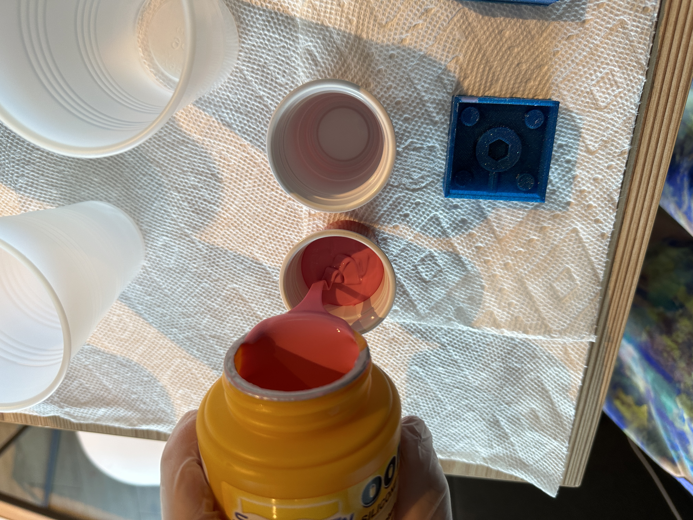
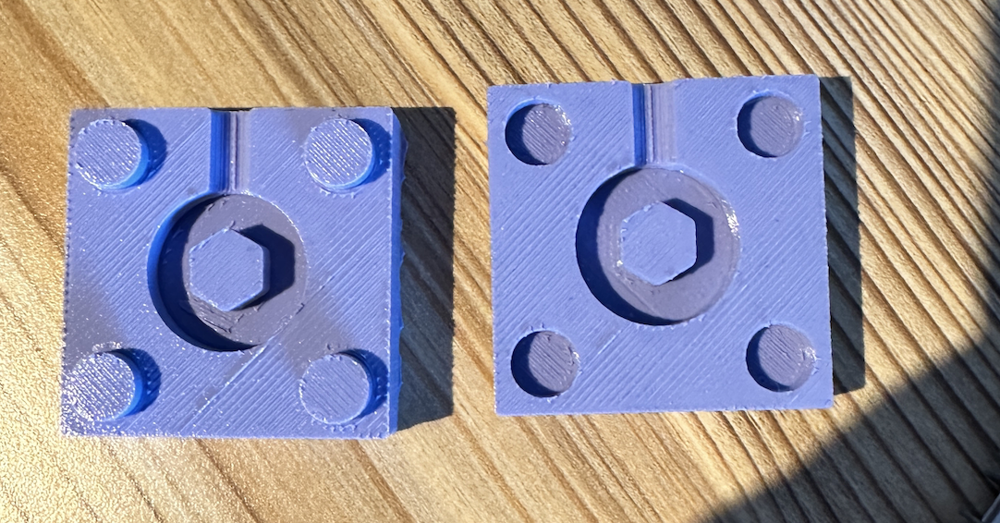
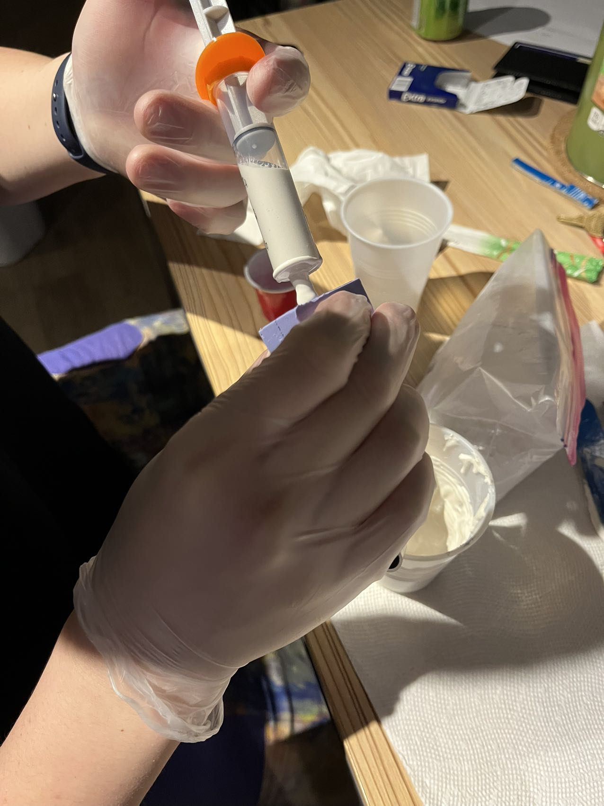
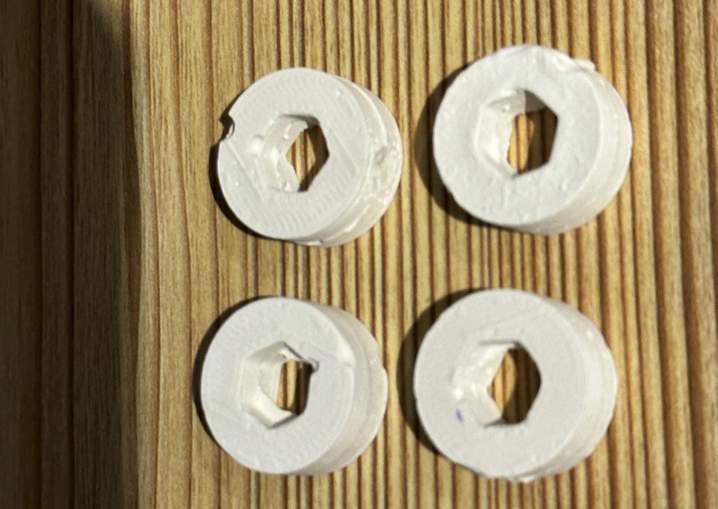

Assignment 6 Molding and Casting
by Kefeng Wang in HCDE598

Before I start my documentation, I want to give credit to Kyle Wang, who helped me figure out how to create a 3D model for the silicon mold and further casting. The item I want to get from the molding and casting is shown below. And it would be used for my final project design.

Here are some dimensional details about the item I want after this experiment.

Design the 3D printing Mold
I started this assignment by building the silicon mold around my final out. The first step I take is to create a silicon mold around it. This step could be split into four small tasks:
1. Create the Hexagonal column in the middle of my mold.
2. Create the cube and make one big hole in the middle for the main part.
3. Adding four keys on each corner.
4. Adding the tube for injection of the hydro stone.
The second step is to build a 3D model to get the mold. This step is relatively easier than the previous step. I used the "boolean difference." to subtract the mold I created from a cube.

the 3D printing takes 2h and 20+ mins.
Creating the silicon mold
Well, the process of using Oomoo is definitely easier than the process of making hydro-stone. My 3D model is very small, as shown in the previous image. I only use one shot of each Oomoo and mix these two liquids together.
After 6 hours of waiting, I peeled the 3D model and finally got my mold. During this process, I questioned myself why I made my 3D model in a whole piece since it was very difficult to take the mold out.
Hydrostone
After doing a little bit of research, I thought it takes hours for hydrostone to dry. But it actually only took several minutes. I only left a hole with a 5mm diameter to inject the hydrostone into the mold. So in order to do that, I purchased a syringe from CVS. However, that is not a good idea.
Because the hydrostone dries up so quickly, so the hydrostone that was left at the bottom dried up in 5 mins. So I could continue using the syringe to inject more hydrostone. But the liquid hydrodstone is very stringy, so it was hard to pull into a small hole. So I cut my mold to make the hole bigger for future use. The image below is my final outcome from the mold made by hydrostone.

Here is all the documentation for assignment 6 !
you can go back to the HOME PAGE from here.